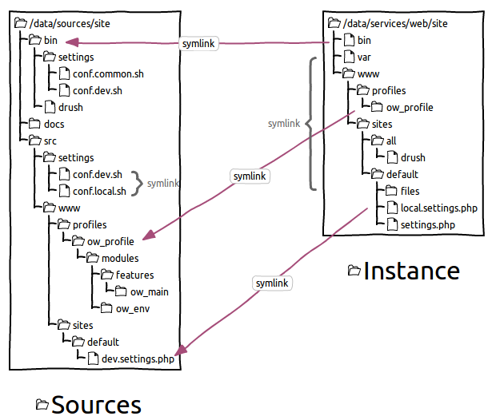

Poste de travail¶
Emplacement des sources¶
Comme pour eZPublish, les sources sont séparées en 2 :
/data/sources/site: code source versionné du projet/data/services/web/site: instance Drupal du projet
Des liens symboliques s’effectuent entre les 2 pour faciliter le développement et le déploiement.
{kind=link}
Description de l’arborescence¶
bin/: submodule Open Wide permettant de déployer un environnement.bin/settings/: configuration globale + fichiers init de copie d’environnement nécessaire lors de l’installbin/vendor/: drush (+ autres outils uniquement en local comme le code sniffer, phpmd)
src/: code source spécifiquesrc/settings/drush/: versions de modules/thèmes activés/désactivés selon un environnementsrc/www/profiles/ow_profile/: profil d’installation contenant les modules et thèmes spécifiques utilisés sur le sitesrc/www/sites/default/: configuration spécifique à un environnement (inclus à la fin desettings.php)
www/: lien symbolique de l’instance du site Drupal (permet de lancer des commandes drush depuis les sources)
PHP Storm¶
Code Sniffer¶
Pour coder sur Drupal, il faut développer selon certaines conventions de codage.
Dans le module coder se trouve le PHP Code Sniffer qui propose toutes les règles d’écriture spécifiques à Drupal.
Restera à la référencer dans votre IDE préféré.
- Aller dans le menu
Settings > Editor > Inspections - Cocher
PHP > PHP Code Sniffer validationpuis sélectionner dans les options le Coding standard Custom - Parcourir l’arborescence pour aller jusqu’au module Drupal
coderde votre projet ([PROJECT_DIRECTORY]/www/sites/all/modules/contrib/coder/coder_sniffer/Drupal/) - Aller dans le menu
Settings > Languages & Frameworks > PHP > Code Sniffer - Dans le chemin du phpcs, parcourir l’arborescence d’un de vos projets, puis sélectionnez l’exécutable dans le submodule : [PROJECT_DIRECTORY]/bin/vendor/bin/phpcs
Voir aussi
- Paramétrage PHPStorm Drupal : https://www.drupal.org/node/1962108
- Utilisation de PHPStorm pour Drupal : https://confluence.jetbrains.com/display/PhpStorm/Drupal+Development+using+PhpStorm
- Installation Code Sniffer : https://confluence.jetbrains.com/display/PhpStorm/PHP+Code+Sniffer+in+PhpStorm
Behat¶
Installez le plugin Behat pour activer la coloration syntaxique des fichiers .feature.